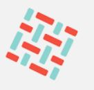

Tracked OSS projects
As part of the Be-Secure project, the community will be tracking the following projects –

Hyperledger Fabric
Hyperledger Fabric delivers a uniquely elastic and extensible architecture, distinguishing it from alternative blockchain solutions. Planning for the future of enterprise blockchain requires building on top of a fully-vetted, open source architecture; Hyperledger Fabric is your starting point.
Hyperledger Indy
This is the official SDK for Hyperledger Indy, which provides a distributed-ledger-based foundation for self-sovereign identity. Indy provides a software ecosystem for private, secure, and powerful identity, and the Indy SDK enables clients for it. The major artifact of the SDK is a C-callable library; there are also convenience wrappers for various programming languages and Indy CLI tool.
Hyperledger Sawtooth
Hyperledger Sawtooth is an enterprise solution for building, deploying, and running distributed ledgers (also called blockchains). It provides an extremely modular and flexible platform for implementing transaction-based updates to shared state between untrusted parties coordinated by consensus algorithms.

Hyperledger BESU
Besu is an Apache 2.0 licensed, MainNet compatible, Ethereum client written in Java.
Hyperledger BURROW
Hyperledger Burrow is a permissioned Ethereum smart-contract blockchain node. It executes Ethereum EVM and WASM smart contract code (usually written in Solidity) on a permissioned virtual machine. Burrow provides transaction finality and high transaction throughput on a proof-of-stake Tendermint consensus engine.

Hyperledger IROHA
Iroha is a straightforward distributed ledger technology (DLT), inspired by Japanese Kaizen principle — eliminate excessiveness (muri). Iroha has essential functionality for your asset, information and identity management needs, at the same time being an efficient and trustworthy crash fault-tolerant tool for your enterprise needs.

Hyperledger ARIES
Hyperledger Aries allows trusted online peer-to-peer interactions based on decentralized identities and verifiable credentials. Aries includes a protocol definition, tools, and reference implementations. The Aries protocol supports identities rooted in a variety of distributed ledgers or blockchains. This approach to identity is often called Self Soverign Identity (SSI).

Hyperledger CACTUS
Hyperledger Cactus aims to provide Decentralized, Secure and Adaptable Integration between Blockchain Networks. Hyperledger Cactus is currently undergoing a major refactoring effort to enable the desired to-be architecture which will enable plug-in based collaborative development to increase the breadth of use cases & Ledgers supported.

Hyperledger CELLO
Hyperledger Cello is a blockchain provision and operation system, which helps manage blockchain networks in an efficient way.

Hyperledger CALIPER
Caliper is a blockchain performance benchmark framework, which allows users to test different blockchain solutions with predefined use cases, and get a set of performance test results.
DefectDojo
DefectDojo is a security program and vulnerability management tool. DefectDojo allows you to manage your application security program, maintain product and application information, triage vulnerabilities and push findings into defect trackers.

OWASP Zed Attack Proxy
The OWASP Zed Attack Proxy (ZAP) is one of the world’s most popular free security tools and is actively maintained by a dedicated international team of volunteers. It can help you automatically find security vulnerabilities in your web applications while you are developing and testing your applications. It's also a great tool for experienced pentesters to use for manual security testing

BeEF
BeEF is short for The Browser Exploitation Framework. It is a penetration testing tool that focuses on the web browser.
OpenDXL Ontology
The OpenDXL Ontology project is focused on the development of an open and interoperable cybersecurity messaging format for use with the OpenDXL messaging bus.
CS-Suite
CS Suite is a one stop tool for auditing the security posture of the AWS infrastructure and does system audits as well. CS Suite leverages current open source tools capabilities and has other missing checks added into one tool to rule them all.
STIX-shifter
STIX-shifter is an open source python library allowing software to connect to products that house data repositories by using STIX Patterning, and return results as STIX Observations.
LEARN MORE
openscap
The oscap program is a command line tool that allows users to load, scan, validate, edit, and export SCAP documents.
fuzzbench
FuzzBench is a free service that evaluates fuzzers on a wide variety of real-world benchmarks, at Google scale. The goal of FuzzBench is to make it painless to rigorously evaluate fuzzing research and make fuzzing research easier for the community to adopt.
ghidra
Ghidra is a software reverse engineering (SRE) framework created and maintained by the National Security Agency Research Directorate. This framework includes a suite of full-featured, high-end software analysis tools that enable users to analyze compiled code on a variety of platforms including Windows, macOS, and Linux. Capabilities include disassembly, assembly, decompilation, graphing, and scripting, along with hundreds of other features.
differential-privacy
This repository contains libraries to generate ε- and (ε, δ)-differentially private statistics over datasets
Syncope
Apache Syncope is an Open Source system for managing digital identities in enterprise environments, implemented in Java EE technology and released under Apache 2.0 license.
pritunl-zero
Pritunl-Zero is a zero trust system that provides secure authenticated access to internal services from untrusted networks without the use of a VPN.

Pacu
Pacu is an open-source AWS exploitation framework, designed for offensive security testing against cloud environments. Created and maintained by Rhino Security Labs, Pacu allows penetration testers to exploit configuration flaws within an AWS account, using modules to easily expand its functionality.
Nmap
Nmap is released under a custom license, which is based on (but not compatible with) GPLv2. The Nmap license allows free usage by end users, and we also offer a commercial license for companies that wish to redistribute Nmap technology with their products.
TRASA
TRASA is a unified access control platform with identity-aware access proxy, privileged access management, two-factor authentication, device trust, and access policy features that enable secure remote access to Web, SSH, RDP, and Database services.
Kestrel
Kestrel threat hunting language provides an abstraction for threat hunters to focus on what to hunt instead of how to hunt. The abstraction makes it possible to codify resuable hunting knowledge in a composable and sharable manner.
Snort
Snort 3 is the next generation Snort IPS (Intrusion Prevention System). This file will show you what Snort++ has to offer and guide you through the steps from download to demo
CSET
The Cyber Security Evaluation Tool (CSET®) is a Department of Homeland Security (DHS) product that assists organizations in protecting their key national cyber assets. It was developed by cybersecurity experts under the direction of CISA. The tool provides users with a systematic and repeatable approach to assessing the security posture of their cyber systems and networks
Malcolm
Malcolm is a powerful network traffic analysis tool suite
CTI
This repository contains the MITRE ATT&CK® and CAPEC™ datasets expressed in STIX 2.0. See USAGE or USAGE-CAPEC for information on using this content with python-stix2.
OSSEC
OSSEC is a full platform to monitor and control your systems. It mixes together all the aspects of HIDS (host-based intrusion detection), log monitoring and SIM/SIEM together in a simple, powerful and open source solution
Zeek
A powerful framework for network traffic analysis and security monitoring.
Security Onion Solutions
Security Onion Solutions, LLC is the creator and maintainer of Security Onion, a free and open platform for threat hunting, network security monitoring, and log management. Security Onion includes best-of-breed free and open tools including Suricata, Zeek, Wazuh, the Elastic Stack and many others
OpenCTI
OpenCTI is an open source platform allowing organizations to manage their cyber threat intelligence knowledge and observables. It has been created in order to structure, store, organize and visualize technical and non-technical information about cyber threats.
Croc
croc is a tool that allows any two computers to simply and securely transfer files and folders.
Security Monkey
Security Monkey monitors your AWS and GCP accounts for policy changes and alerts on insecure configurations. Support is available for OpenStack public and private clouds. Security Monkey can also watch and monitor your GitHub organizations, teams, and repositories.
Scorecard
Automate analysis and trust decisions on the security posture of open source projects.
Syft
A CLI tool and go library for generating a Software Bill of Materials (SBOM) from container images and filesystems. Exceptional for vulnerability detection when used with a scanner tool like Grype.
Grype
A vulnerability scanner for container images and filesystems. Easily install the binary to try it out. Works with Syft, the powerful SBOM (software bill of materials) tool for container images and filesystems.
Emmy
Emmy is a library for building protocols/applications based on zero-knowledge proofs, for example anonymous credentials. Zero-knowledge proofs are client-server protocols (in crypto terms also prover-verifier, where the prover takes on the role of the client, and the verifier takes on the role of the server) where the client proves a knowledge of a secret without actually revealing the secret